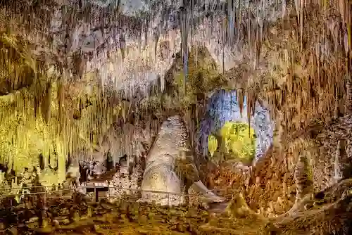
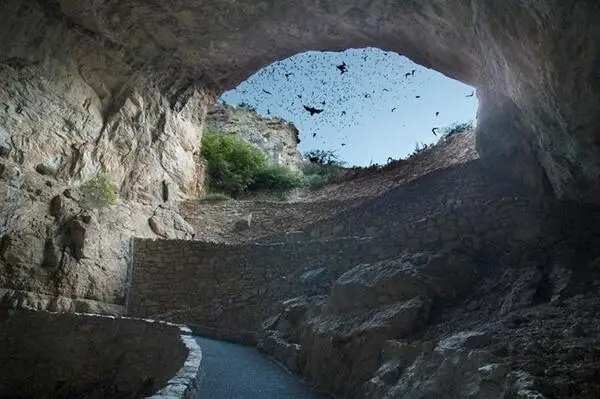

An Incredible Underground World
In a recent trip accross the midwest, we discovered that with only a few extra hours we could stop by Carlsbad Caverns. It was just an opportunity stop, it was never on our bucket list or anything. Well now I can tell you that this is far more than a simple landmark. Arriving late, almost missing the last entry time, we rushed to the entrance and caught one of the final entrance orientations. I'm so glad we missed the scale model in the museum, becuase we had no idea what we were in for. The next half hour our jaws fell and our eyes were wide with the incredible sights we witnessed.
Please enjoy this site detailing some of the amazing features of Carlsbad Caverns.

